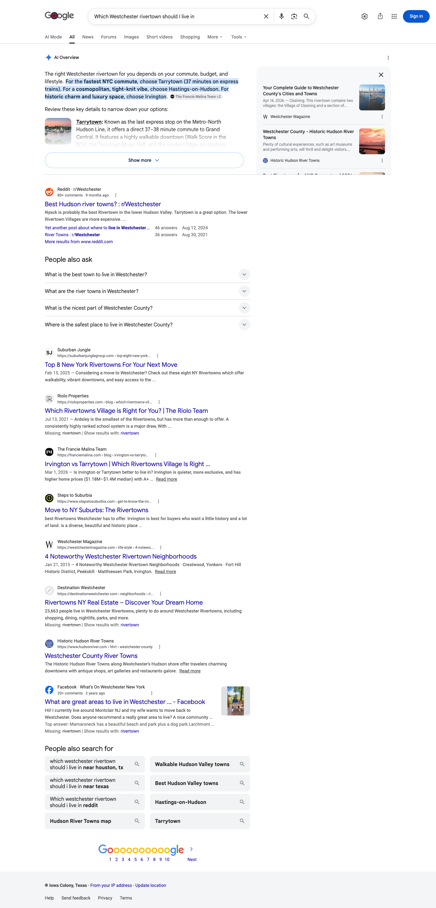
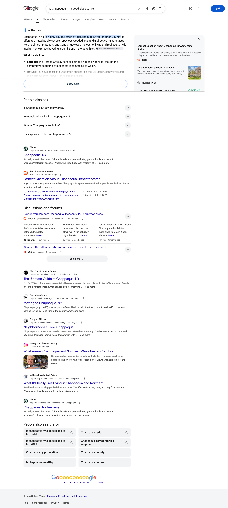
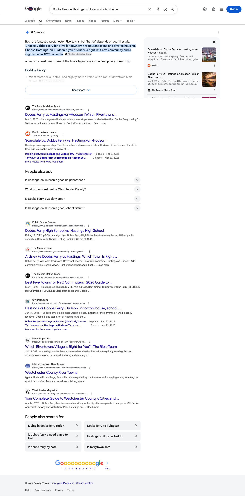

Total Search AI Citation Report
June 2026 | The Francie Malina Team
Executive summary
Cited on Eight of the Twelve Buyer Questions
In June, franciemalina.com was named as a source on eight of the twelve buyer and seller questions we track. When Westchester buyers ask an AI engine these questions, your content is in the answer two times out of three.
Google’s AI Overview is carrying that footprint. Google generated an AI Overview on eleven of the twelve questions, and named you as a source on eight of them, by far the widest reach of any surface. Every question where you are cited anywhere is a question Google’s AI Overview already cites you on. Perplexity and Bing each add four, and ChatGPT two, and all of those sit inside the eight Google already covers.
Chappaqua is the standout single page. It is cited on Google’s AI Overview, on Perplexity, and on Bing at once, all from one guide. That is the clearest signal in this report about what a single thorough page does in this market.
Citation matrix
All 12 Questions by Engine
✓ Cited in June, your site was named as a source in the answer
– Not cited in June
◦ Google did not generate an AI Overview for this question, so there was no AI answer to be cited in
| Buyer question | Google AI Overview | Perplexity | ChatGPT | Bing / Copilot | |
|---|---|---|---|---|---|
| Is Chappaqua NY a good place to livefranciemalina.com | ✓ | ✓ | – | ✓ | |
| Is Bronxville NY a good place to livefranciemalina.com | – | – | – | – | |
| Best Westchester towns for NYC commutersfranciemalina.com | ✓ | – | – | – | |
| Which is better Bronxville or Scarsdale NYfranciemalina.com | ✓ | ✓ | – | ✓ | |
| Bronxville vs Scarsdale which Westchester village is betterfranciemalina.com | ✓ | – | ✓ | ✓ | |
| Best Hudson Line villages for NYC commutersfranciemalina.com | ✓ | ✓ | ✓ | – | |
| Moving to Chappaqua NY guidefranciemalina.com | ✓ | – | – | ✓ | |
| Dobbs Ferry vs Hastings on Hudson which is betterfranciemalina.com | ✓ | ✓ | – | – | |
| Moving to Scarsdale NY guide | – | – | – | – | |
| Moving to Scarsdale NY from Texas | ◦ | – | – | – | |
| Bronxville NY property tax rate | – | – | – | – | |
| Which Westchester rivertown should I live infranciemalina.com | ✓ | – | – | – |
Reading the matrix. Eight of the twelve questions are cited on at least one engine, and Google’s AI Overview accounts for all eight of them. Google generated an AI Overview on eleven of the twelve questions and cited you on eight. Perplexity and Bing each cite you on four, ChatGPT on two, and every one of those falls inside the eight Google already covers. The four questions no engine cites yet, the two Scarsdale relocation questions, “Is Bronxville a good place to live,” and the Bronxville property-tax question, are the July build targets.
Story one
Google AI Overviews – Your Strongest Surface, Eight of Twelve
Google does not build an AI Overview for every question. On these twelve it built one on eleven, and named franciemalina.com as a source on eight of them. That is the widest AI footprint you have anywhere, and it is on the highest-intent question in a buyer’s research: the one they type into Google first.
“Which Westchester rivertown should I live in” Screenshot evidence
Google’s AI Overview builds its town-by-town recommendation and attributes The Francie Malina Team on the Tarrytown, Irvington, and Hastings-on-Hudson picks. Your guide is the source Google is reading the rivertowns from.

“Is Chappaqua NY a good place to live” Screenshot evidence
The Francie Malina Team is named as an attributed source inside the Overview itself, and the Ultimate Guide to Chappaqua appears again in the organic results below. This is the same question Perplexity and Bing also cite you on, so all three surfaces agree on Chappaqua.

“Dobbs Ferry vs Hastings on Hudson which is better” Screenshot evidence
On the head-to-head comparison, Google’s AI Overview leads its recommendation with your guidance and attributes The Francie Malina Team inline. Comparison questions are where your content is strongest across every surface, and Google is no exception.

The rest of the AI Overview footprint
Beyond the three above, Google’s AI Overview also cites you on “Best Westchester towns for NYC commuters,” “Best Hudson Line villages for NYC commuters,” “Moving to Chappaqua NY guide,” “Which is better Bronxville or Scarsdale NY,” and “Bronxville vs Scarsdale which Westchester village is better,” for eight in total. The three questions where Google built an Overview but did not cite you, “Is Bronxville a good place to live,” “Moving to Scarsdale NY guide,” and the Bronxville property-tax question, are the clearest targets to convert next.
Story two
Perplexity – Four Questions, All on the Comparison Cluster
Perplexity cites franciemalina.com on four of the twelve. Every one of them is a comparison or commuter question, which is a consistent and useful pattern.
Four Perplexity questions cited
| Buyer question | Status | Source cited |
|---|---|---|
| Which is better Bronxville or Scarsdale NY | Cited | franciemalina.com |
| Is Chappaqua NY a good place to live | Cited | franciemalina.com |
| Best Hudson Line villages for NYC commuters | Cited | franciemalina.com |
| Dobbs Ferry vs Hastings on Hudson which is better | Cited | franciemalina.com |
Story three
ChatGPT – Cited on the Two Comparison Questions
ChatGPT cites franciemalina.com on two of the twelve, and both are comparison questions: the Bronxville versus Scarsdale village comparison and the Hudson Line commuter-village question.
Two ChatGPT questions cited
| Buyer question | Status | Source cited |
|---|---|---|
| Bronxville vs Scarsdale which Westchester village is better | Cited | franciemalina.com |
| Best Hudson Line villages for NYC commuters | Cited | franciemalina.com |
Story four
Bing – Four Questions, With the Chappaqua Guide Doing the Work
Bing cites you on four of the twelve, and two of those four are Chappaqua. Bing is the index several AI answer surfaces retrieve from, so presence here tends to lead the others.
Four Bing questions cited
| Buyer question | Status | Source cited |
|---|---|---|
| Which is better Bronxville or Scarsdale NY | Cited | franciemalina.com |
| Bronxville vs Scarsdale which Westchester village is better | Cited | franciemalina.com |
| Is Chappaqua NY a good place to live | Cited | franciemalina.com |
| Moving to Chappaqua NY guide | Cited | franciemalina.com |


Gaps as opportunities
The July Plan – Turn Chappaqua Into a Repeatable Pattern
You are weighing where the rebuilt content should go after the Scarsdale cluster came down. June’s data answers that more clearly than any plan we could have written in advance.
1. Turn the rivertown Overview into owned town pages
Google’s AI Overview already cites you on “which rivertown should I live in” and on the Dobbs Ferry comparison, off one guide. Dedicated depth pages for Dobbs Ferry, Irvington, Hastings, and Tarrytown convert that single citation into a page you own for each town.
2. Convert the three near-misses
Google built an AI Overview on three questions without citing you: “Is Bronxville a good place to live,” “Moving to Scarsdale NY guide,” and the Bronxville property-tax question. The Overview is already there; the work is earning the source slot with a page that answers each directly.
3. Feed ChatGPT what it rewards
ChatGPT cites you only on head-to-head comparisons. More town-versus-town pages, written to answer both phrasings of the comparison cleanly, is the most direct way to widen the thinnest column.
4. Rebuild Scarsdale itself
Both Scarsdale relocation questions are uncited on every engine, because the Scarsdale cluster never went live. This is the market you are best known for and the clearest unclaimed ground in the report. Republishing that cluster is the single highest-value gap to close.